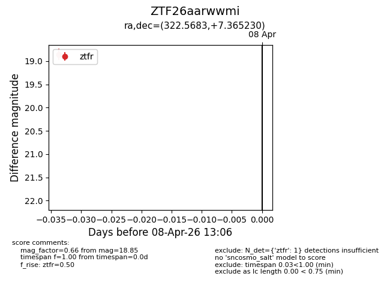
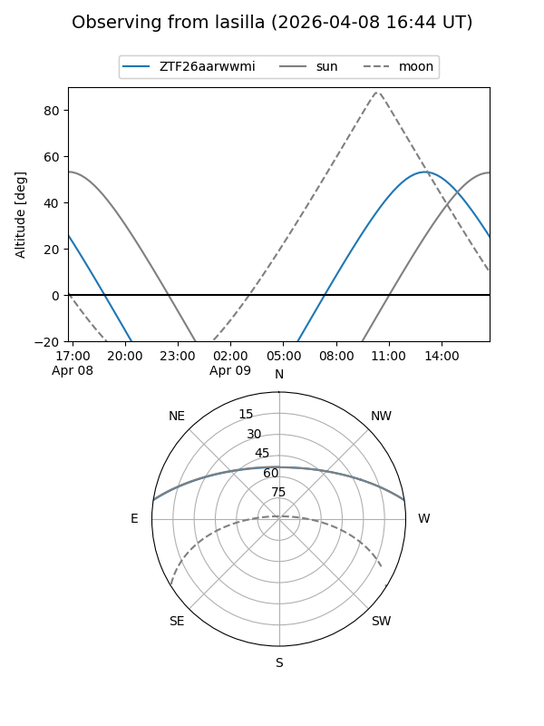
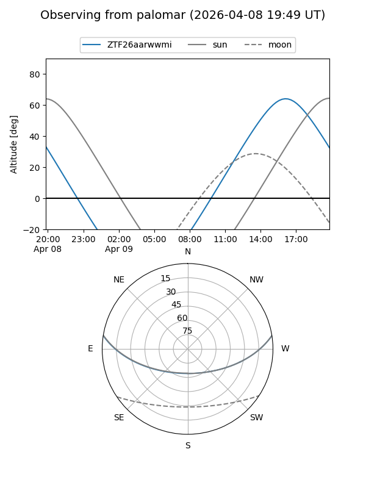

ZTF26aarwwmi
Target ZTF26aarwwmi at 2026-04-08 13:11
Aliases and brokers:
FINK: link
Lasair: link
ALeRCE: link
alt names
ZTF26aarwwmi (ztf,fink_ztf)
Coordinates:
equatorial (ra, dec) = 322.5683,+7.36523
equatorial (HMS+DMS) = 21:30:16.39,+07:21:54.83
galactic (l, b) = (60.7759,-30.36157)
Flags:
Photometry:
last ztfr=18.85
1 ztfr detections
Lightcurve

Visibility


Additional plots